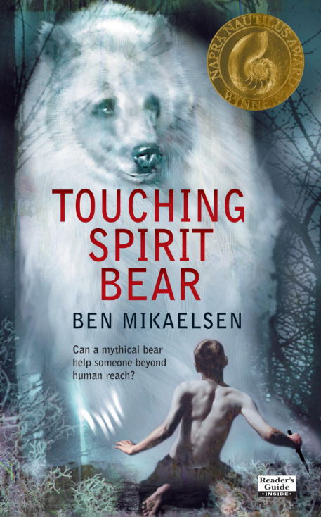

Favorite Book
Touching Spirit Bear by Ben Mikaelsen
Touching Spirit Bear is a coming-of-age/philosophy novel about the toils of a young man named Cole. His violent tendencies has lead him to the consequences of juvenile detention. As part of an experimental program, Cole is sent to a remote Alaskan camp to learn under the elders that thrive in the area. Along his stay, he is confronted by a mystical white bear that scars him, and changes his life forever.
I am particularly a fan of the philosophical teachings the book attempts to implore on its readers; that anger and sadness are manageable emotions that can bring about the most profound learning experiences. I recommend this book.
Favorite Song
"HAZARD DUTY PAY!"" by JPEGMAFIA
Listen on Spotify.
"HAZARD DUTY PAY!" is a celebration of the profound rapper/producer/engineer JPEGMAFIA. Released under scrutiny of his Atlantic Records advisors, the artist makes a grand show of his abrasiveness and expertise. The gospel samples this track chops and grooves along with is extremely uplifting and technically impressive. JPEGMAFIA is among my top 3 artists of this decade, I'm very excited to see him in Detroit this November.
Favorite Series
Boardwalk Empire
Boardwalk Empire is a grimy yet sophisticated peer into the illegal bootlegging business of the roaring 1920's United States. The story follows the snarky, gentlemanly, unlikeable Enoch "Nucky" Thompson (played by Steve Buscemi) and the historical characters that surround his spoils. The show's themes delve into nepotism, trauma, love, and betrayal as every character trudges for their desires. The HBO show carries inspiration from its other classic drama The Sopranos with resident writer Terrence Winters creating this show with the directorial help of Martin Scorsese and Timothy Van Patten. I highly recommend this show if you're into crime dramas.